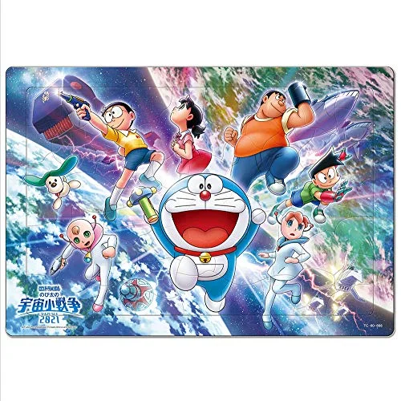

Introduction
Gadgets and qualities
Characters
Movies and episodes
Movies

Nobita and the New troops
Nobita's great battles
Nobita's secret gadget museum
Episodes
S20 E26 Dracula set,shadow flash
S17 E43 Fairy tale land admission ticket
S14 E30 Nobita's shooting stars
Links
Movies to watch for fun!